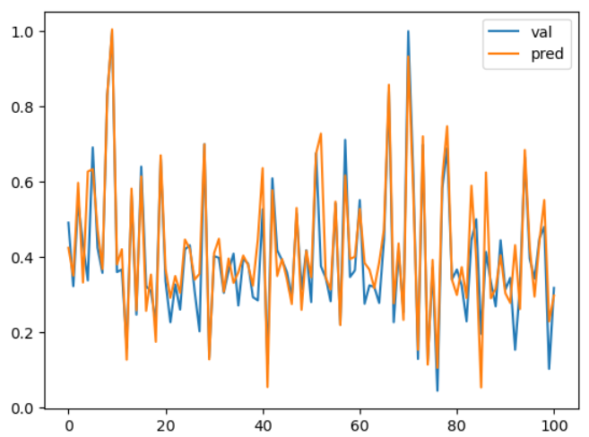

快速体验BaseNN，开始！
简介
BaseNN可以方便地逐层搭建神经网络，深入探究神经网络的原理。
安装
pip install basenn 或 pip install BaseNN
更新库文件：pip install --upgrade BaseNN
体验
运行demo/BaseNN_demo.py。
可以在命令行输入BaseNN查看安装的路径，在安装路径内，可以查看提供的更多demo案例。同时可查看附录。
如果在使用中出现类似报错：**AttributeError**: partially initialized module 'cv2' has no attribute 'gapi_wip_gst_GStreamerPipeline' (most likely due to a circular import)
可尝试通过运行pip install --upgrade opencv-python解决
第一个BaseNN项目：搭建搭建鸢尾花分类模型
第0步 引入包
# 导入BaseNN库、numpy库，numpy库用于数据处理
from BaseNN import nn
import numpy as np
第1步 声明模型
model = nn()
第2步 载入数据
train_path = 'data/iris_training.csv'
model.load_tab_data(train_path, batch_size=120)
第3步 搭建模型
逐层添加，搭建起模型结构。注释标明了数据经过各层的维度变化。
model.add(layer='linear',size=(4, 10),activation='relu') # [120, 10]
model.add(layer='linear',size=(10, 5), activation='relu') # [120, 5]
model.add(layer='linear', size=(5, 3), activation='softmax') # [120, 3]
以上使用add()方法添加层，参数layer='linear'表示添加的层是线性层，size=(4,10)表示该层输入维度为4，输出维度为10，activation='relu'表示使用ReLU激活函数。
第4步 模型训练
模型训练可以采用以下函数：
# 设置模型保存的路径
model.save_fold = 'checkpoints/iris_ckpt'
# 模型训练
model.train(lr=0.01, epochs=1000)
也可以使用继续训练：
checkpoint = 'checkpoints/basenn.pth'
model.train(lr=0.01, epochs=1000, checkpoint=checkpoint)
参数lr为学习率， epochs为训练轮数，checkpoint为现有模型路径，当使用checkpoint参数时，模型基于一个已有的模型继续训练，不使用checkpoint参数时，模型从零开始训练。
第5步 模型测试
用测试数据查看模型效果。
# 用测试数据查看模型效果
model2 = nn()
test_path = 'data/iris_test.csv'
test_x = np.loadtxt(test_path, dtype=float, delimiter=',',skiprows=1,usecols=range(0,4))
res = model2.inference(test_x, checkpoint="checkpoints/iris_ckpt/basenn.pth")
model2.print_result(res)
# 获取最后一列的真实值
test_y = np.loadtxt(test_path, dtype=float, delimiter=',',skiprows=1,usecols=4)
# 定义一个计算分类正确率的函数
def cal_accuracy(y, pred_y):
res = pred_y.argmax(axis=1)
tp = np.array(y)==np.array(res)
acc = np.sum(tp)/ y.shape[0]
return acc
# 计算分类正确率
print("分类正确率为：",cal_accuracy(test_y, res))
用某组测试数据查看模型效果。
# 用某组测试数据查看模型效果
data = np.array([test_x[0]])
checkpoint = 'checkpoints/iris_ckpt/basenn.pth'
res = model.inference(data=data, checkpoint=checkpoint)
model.print_result(res) # 输出字典格式结果
参数data为待推理的测试数据数据，该参数必须传入值；
checkpoint为已有模型路径，即使用现有的模型进行推理。
快速体验
体验BaseNN的最快速方式是通过OpenInnoLab平台。
OpenInnoLab平台为上海人工智能实验室推出的青少年AI学习平台，满足青少年的AI学习和创作需求，支持在线编程。在“项目”中查看更多，搜索”BaseNN“，即可找到所有与BaseNN相关的体验项目。
AI项目工坊：https://www.openinnolab.org.cn/pjlab/projects/list?backpath=/pjlab/ai/projects
（用Chrome浏览器打开效果最佳）
用BaseNN库搭建搭建鸢尾花分类模型项目地址：https://www.openinnolab.org.cn/pjlab/project?id=641bc2359c0eb14f22fdbbb1&sc=635638d69ed68060c638f979#public
挑战使用BaseNN完成第一个回归项目：房价预测
Boston Housing Dataset（波士顿房价数据集）是一个著名的数据集，经常用于机器学习和统计分析中。该数据集包含波士顿郊区房屋的各种信息，包括房价和与房价可能相关的各种属性。选择了四个与房价关系较大的特征：RM (每栋住宅的平均房间数)、LSTAT (人口中较低地位的百分比)、PTRATIO (师生比例)、NOX (一氧化氮浓度) 。进行数据预处理后生成了已提取出只有这四列特征和预测值且做了归一化处理的训练集（house_price_data_norm_train.csv）、验证集（house_price_data_norm_val.csv），搭建模型进行训练，数据预处理的代码可参考原项目。
项目地址：
（用Chrome浏览器打开效果最佳）
第0步 引入包
# 导入库
from BaseNN import nn
第1步 声明模型
# 声明模型，选择回归任务
model = nn('reg')
第2步 载入数据
model.load_tab_data('house_price_data_norm_train.csv',batch_size=1024) # 载入数据
第3步 搭建一个3层的全连接神经网络
model.add('Linear', size=(4, 64),activation='ReLU')
model.add('Linear', size=(64, 4), activation='ReLU')
model.add('Linear', size=(4, 1))
model.add(optimizer='Adam')
第4步 模型训练
# 设置模型保存的路径
model.save_fold = 'checkpoints/ckpt'
model.train(lr=0.008, epochs=5000,loss='MSELoss') # 训练
第5步 模型测试
此步骤可以借助验证集完成。
读取数据。
import numpy as np
# 读取验证集
val_path = 'house_price_data_norm_val.csv'
val_x = np.loadtxt(val_path, dtype=float, delimiter=',',skiprows=1,usecols=range(0,4)) # 读取特征列
val_y = np.loadtxt(val_path, dtype=float, delimiter=',',skiprows=1,usecols=4) # 读取预测值列
模型推理。
# 导入库
from BaseNN import nn
# 声明模型
model = nn('reg')
y_pred = model.inference(val_x,checkpoint = 'checkpoints/ckpt2/basenn.pth') # 对该数据进行预测
绘制曲线图。
# 绘制真实数据和预测比较曲线
import matplotlib.pyplot as plt
plt.plot(val_y, label='val')
plt.plot(y_pred, label='pred')
plt.legend()
plt.show()
对比输出，查看回归的效果，觉得效果还是很不错的。

挑战使用BaseNN完成第一个自然语言处理项目：自动写诗机
第0步 引入包
# 导入BaseNN库、numpy库，numpy库用于数据处理
from BaseNN import nn
import numpy as np
第1步 声明模型
model = nn()
第2步 载入数据
tangccc.npz是本项目的文本数据，源于互联网，包括57580首唐诗。npz是一种用于存储NumPy数组数据的文件格式。
npz文件是一种方便的方式来保存和加载NumPy数组，通常用于在不同的Python程序之间或不同的计算环境中共享数据。
在该项目中可以使用load_npz_data()方法直接读取npz格式的数据到模型中
model.load_npz_data('tangccc.npz')
第3步 搭建LSTM模型
搭建模型只需加入em_lstm层即可，其他层会自适应补充，其中num_layers参数为循环神经网络循环的次数。
em_LSTM由包括embedding层，LSTM层和线性层组成，因为有embedding层的加入，所以em_LSTM可以专门处理文本数据。
model.add('em_lstm', size=(128,256),num_layers=2)
第4步 模型训练
为了节省训练时间，可以选择继续训练。
checkpoint = 'model.pth'
model.save_fold = 'checkpoints'
model.train(lr=0.005, epochs=1,batch_size=16, checkpoint=checkpoint)
第5步 模型测试
可以输入一个字输出下一个字。
input = '长'
checkpoint = 'model.pth'
result = model.inference(data=input,checkpoint=checkpoint) # output是多维向量，接下来转化为汉字
output = result[0]
print("output: ",output)
index = np.argmax(output) # 找到概率最大的字的索引
w = model.ix2word[index] # 根据索引从词表中找到字
print("word:",w)
拓展
可以使用训练好的模型生成唐诗，生成藏头诗，做各种有意思的应用。
更多内容详见用BaseNN实现自动写诗机项目，项目地址：https://www.openinnolab.org.cn/pjlab/project?id=641c00bbba932064ea962783&sc=635638d69ed68060c638f979#public
更多案例详见下文。